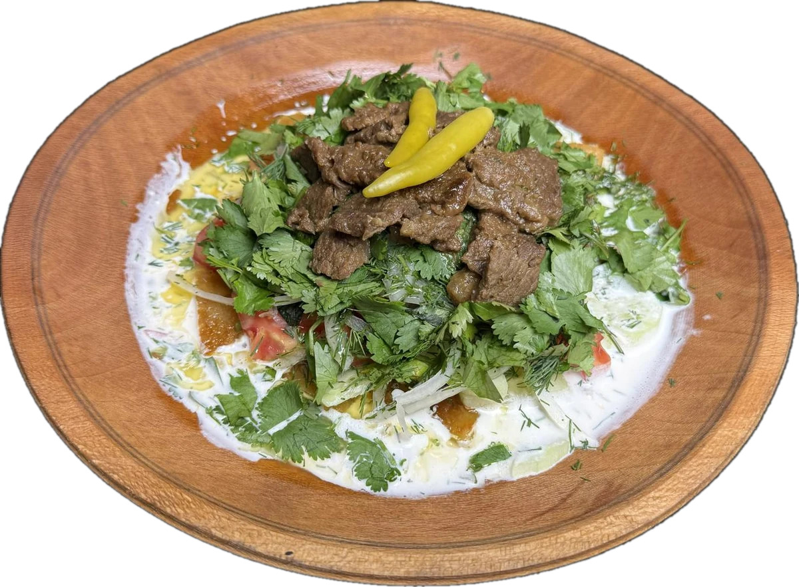
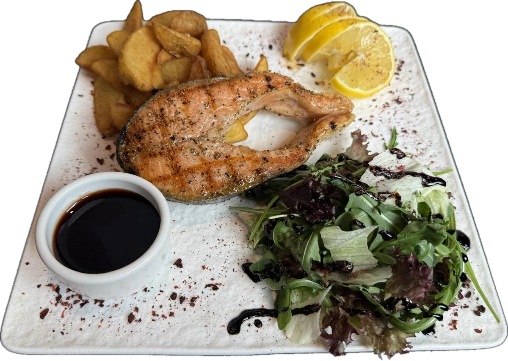

01Вкус Востока
ЧАЙХАНА · УФА
Вкус Востока.
По-настоящему.
Фирменный плов от «Дони», самаркандский плов, шашлык и блюда восточной кухни — приготовленные с уважением к традициям.
Ленина, 30 · Уфа Халяльное меню

ПЛОВ ОТ «ДОНИ»
Халяльное менюПлов и блюда на огнеВосточная кухняУфа · Ленина, 30
ПЛОВ ✦ МАНТЫ ✦ ШАШЛЫК ✦ ВОСТОЧНАЯ КУХНЯ

ВКУС ВОСТОКАО DONIШЕФ
Восток начинается
с гостеприимства.
Это тёплые встречи, разговоры за одним столом и блюда, которыми хочется поделиться. В DoniШеф мы готовим восточную кухню для обедов, семейных ужинов и встреч с близкими.
01Восточная кухня
02Блюда на огне
03Доставка и самовывоз
АТМОСФЕРА DONIШЕФ
Здесь встречаются
за одним столом.
Короткие видео из жизни чайханы.
Нажмите, чтобы посмотреть.
02Курутоб
03Блюда на огне
ДОСТАВКА И САМОВЫВОЗ
DoniШеф —
там, где вы.
Любимые блюда восточной кухни — для дома, офиса или встречи с близкими. Позвоните нам, чтобы оформить заказ и уточнить условия доставки.

ОТЗЫВЫ ГОСТЕЙ
Впечатления —
от гостей.
Читайте актуальные отзывы о кухне и сервисе DoniШеф на 2ГИС.
Читать отзывы в 2ГИСЖДЁМ В ГОСТИ
Заходите
в DoniШеф.
Уфа, улица Ленина, 30
1 этаж · Кировский район
СейчасОткрыто · 11:00 — 22:00Пн–сб: 11:00–22:00 · вс: 11:00–20:00
+7 937 323-10-05